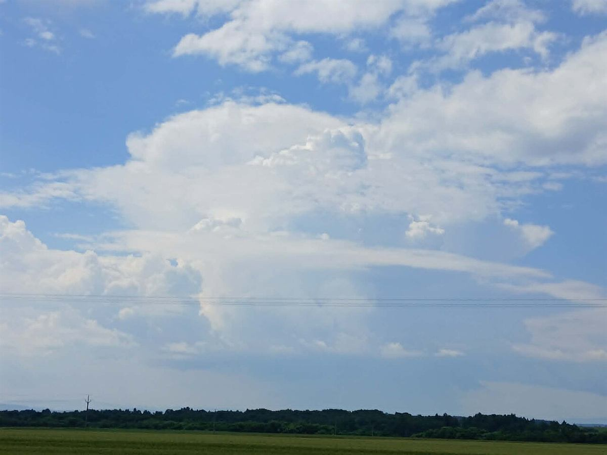
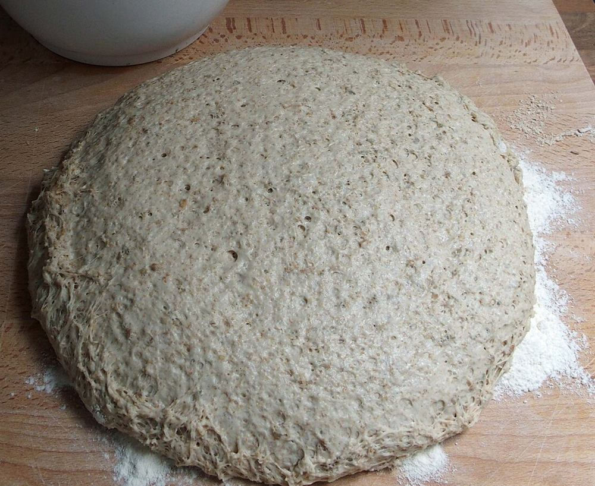
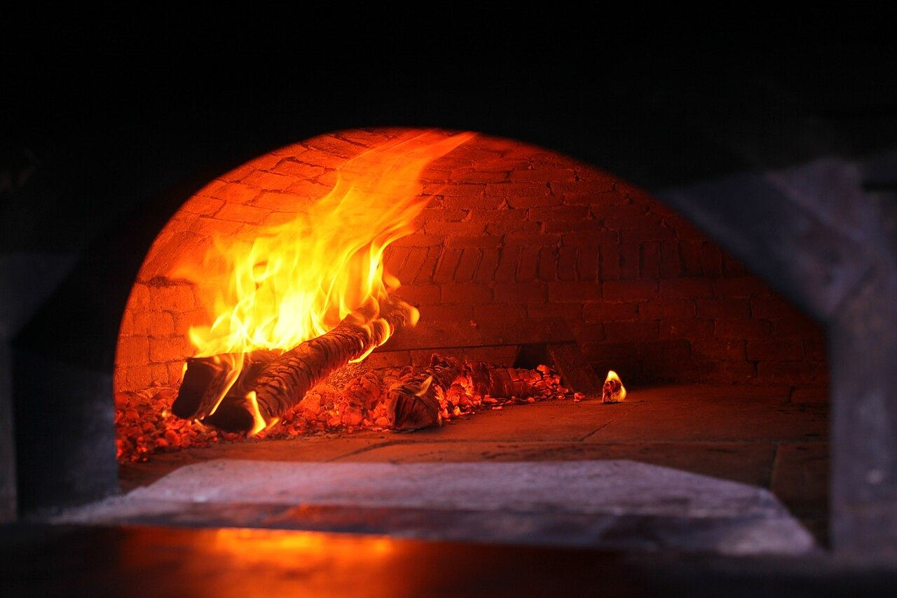
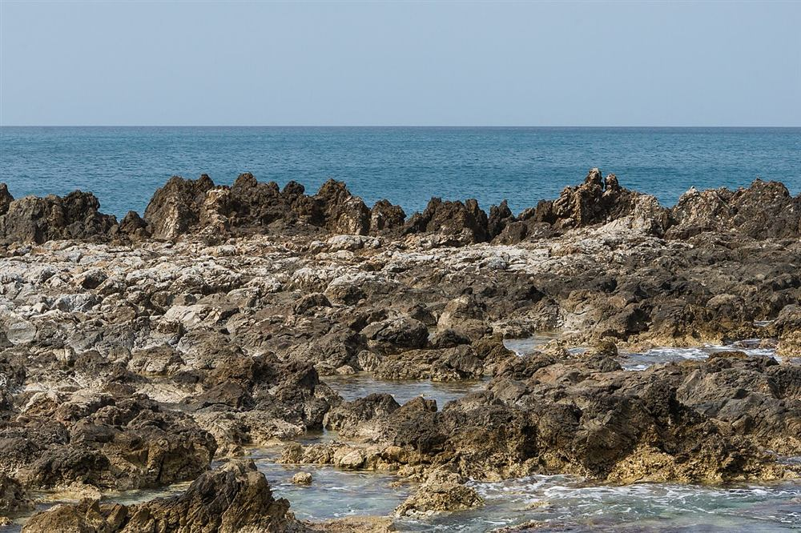

Photo: イメージなついろ
店名から思い浮かぶ「夏のいろ」を、このサイトではこんなふうに表現しています。
IMAGE COLORS
店名に込められた(と思われる)イメージ
「なついろ」という名前から、このサイトでは次の4つの色をイメージしました。お店の公式な由来ではなく、制作側の表現です。
群青#1D4ED8
青い海。どこまでも広がる夏の水平線。
白#FFFFFF
白い雲。入道雲の、まぶしい白。
向日葵#FFC61A
向日葵の黄色。夏の日ざしを思わせる明るい色。
トマト#D93A26
トマトの赤。ピザに似合う、あざやかな赤。
PIZZA IMAGE
ピザづくりのイメージ
以下は一般的なピザづくりの流れのイメージです。お店の実際の製法ではありません。

Photo: イメージ
Photo: イメージ- STEP 1
のばす
生地をていねいにのばします。
- STEP 2
のせる
彩りを考えながら、具をのせます。
- STEP 3
焼き上げる
熱でこんがりと焼き上げます。

Photo: イメージ
SHIRAHAMA
鹿児島県薩摩川内市白浜町で
ピザなついろは、鹿児島県薩摩川内市白浜町にあります。「白浜」という名前のとおり、海辺を思わせるやわらかな響きの町です。海風を感じながら、ほっと一息つく。そんな夏のひとときに、ピザがそっと寄り添えたらと思います。
店舗情報(仮)
- 住所
- 鹿児島県薩摩川内市白浜町736-1
- 営業時間
- お問い合わせください
- 店舗形態
- 仮表記(詳細はお問い合わせください)